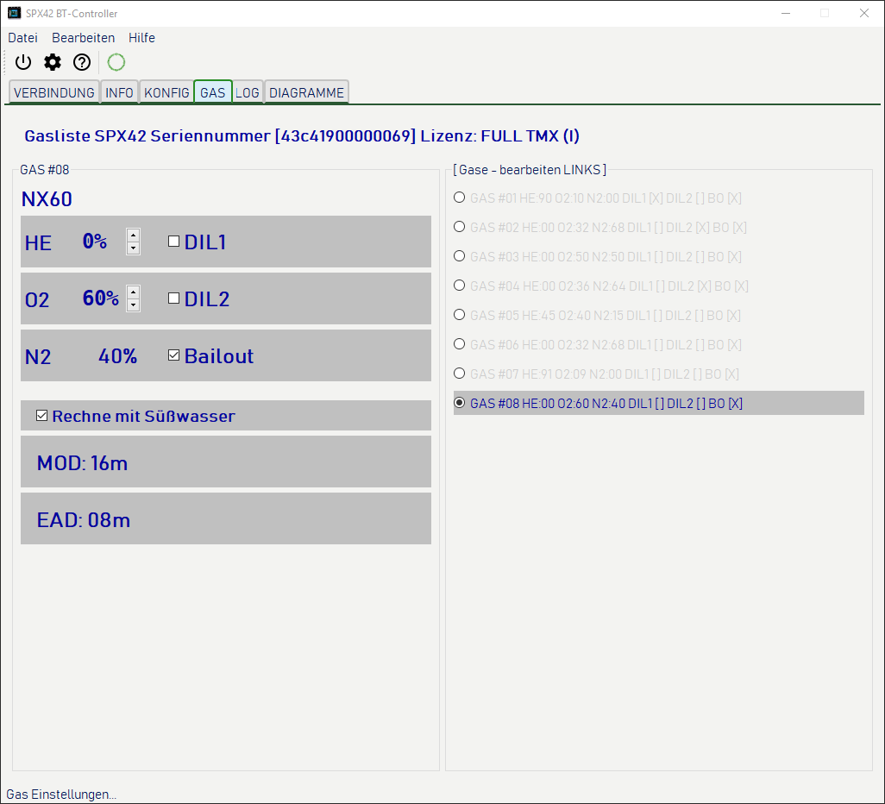
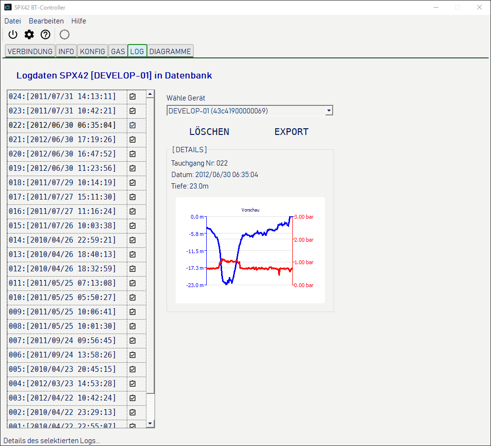
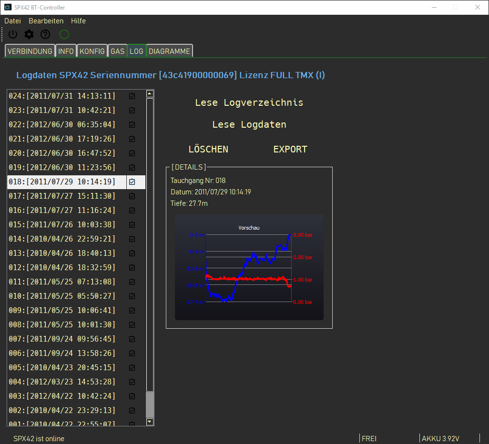
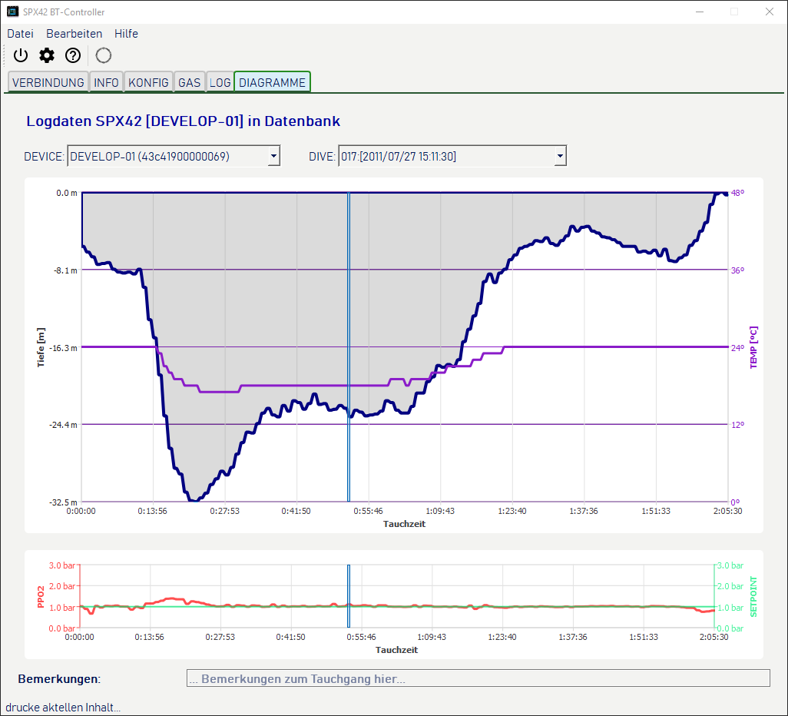
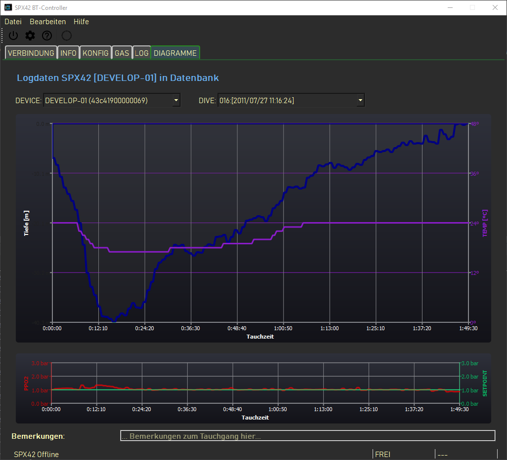

<!doctype html>
<html itemscope="" itemtype="http://schema.org/WebPage" lang="en"></html>
<head>
    <meta charset="UTF-8">
    <title>HELP for SUBMATIX SPX42Control</title>
    <link rel="stylesheet" href="helpstyle-de.css">
</head>
<body>
  <div class="paragraph" id="overview">
    <h1>Übersicht</h1>
    <div class="text">
      Diese Programm (oder kurz auch App für Applikation) steuert den SPX42 Tauchcomputer 
      via Bluetooth Verbindung. Es setzt DAtum und Zeit (wenn die Firmware dies unterstützt), 
      es setzt Einstellungen wie Dekompressionseinstellungen, Masseinheiten und so weiter.<br />
      Die App ist weiter zum auslesen der Tauchprotokolle und deren grafische Darstellung, 
      sie kann die Daten in einem Speziellen UDDF Dateiformat exportieren und so die Daten
      für andere Programme zugänglich machen. Solceh Programme sind z.B. "subsurface" 
      oder "Diving Log" auf verschiedenen Betriebssystemen.
    </div>
  </div>

  <div class="paragraph" id="mark_00">
    <h1>Verbindung</h1>
    <div class="text">
      Die App startet mit der Verbindungsseite. <br />

      <div class="image_preview">
        
        
      </div>

      Die App kommt mit zwei vorbereiteten Themen, einem hellen und einem dunklen Thema. 
      Du kannst sie an den Vorschaubildern rechts erkennen. Du kannst eigene Themen mittels einer
      css Datei erstellen und sie für die App anwenden. Dies wird später beschrieben.<br />
      Um den SPX42 Tauchcomputer zu verbinden muss zunächst ein paaren (pairing) mit dem Betriebssystem
      erfolgen. Dies ist ein Sicherheitsaspekt moderner Betriebssysteme und nicht mit der App
      zu machen. Bitte lies die Dokumentation deines Betriebssystems um den SPX42 Tauchcomputer mit
      deinem Betriebssystem zu paaren. <br />
    </div>
  </div>

  <div class="paragraph" id="mark_01">
    <h1>SPX42 Informationen</h1>
    <div class="text">
      <div class="image_preview">
        
        
      </div>
      Diese Ansicht zeigt einige grundsätzliche Informationen des verbundenen SPX42 Computers
      wie Modell, Seriennummer und Firmwareversion.
    </div>
  </div>

  <div class="paragraph" id="mark_02">
    <h1>SPX42 Konfiguration</h1>
    <div class="text">
      <div class="image_preview">
        
        
      </div>
      Auf dieser Seite kannst du alle Parameter des SPX42 Tauchcomputers einstellen, ausser die für Gase.<br />

      

      <!-- List -->
      <ol>
        <li>
          <b>Werkzeugleiste</b><br />
          Hier sind die fundamentalen Funktionen an einem Platz. Von links nach rechts:
          <ul>
            <li>Beende/Verlasse die Applikation</li>
            <li>Öffne den Einstellungsdialog</li>
            <li>Rufe diese Hilfe auf</li>
            <li>Zeige den Online Status / trenne Verbindung zum SPX42</li>
          </ul>  
        </li>

        <li>
          <b>Wähle die verschiedenen Tabs / Seiten des Programmes</b>
        </li>

        <li>
          <!-- DECO-->
          <b>Konfiguriere die Einstellungen für die Dekompression:</b><br />
          <i>Siehe auch „Understanding M-Values“ von Eric C. Baker</i>
          <dl>
            <dt>GF-LOW:</dt>
            <dd>Unterer Gradientenwert</dd>

            <dt>GF-HIGH:</dt>
            <dd>oberer Gradientenwert</dd>

            <dt>Konservativ:</dt>
            <dd>Wenn nicht "Benutzerdefiniert" dann setzt diese Voreinstellung GF-LOW und GF-HIGH</dd>

            <dt>Dynamische Gradienten:</dt>
            <dd>Wenn diese Option ausgeewählt ist, werden im Fall des Bailouts die Konservatismus Werte 
              auf weniger Konservativ gesetzt</dd>

            <dt>Letzter Dekostop:</dt>
            <dd>In welcher Tiefe erfolgt der letzte Deokompressionsstop</dd>

            <dt>Tiefe Stopps AN:</dt>
            <dd>Wenn "AN" erfolgen die esten Dekompressionsstopps in größerer Tiefe</dd>
          </dl>
        </li>

        <li>
          <!-- SETPOINT-->
          <b>Einstellungen für den Sauerstoff Partialdruck:</b>
          <dl>
            <dt>Automatischer Setpoint:</dt>
            <dd>Ist der automatische Setpoint AUS, dann wechselt der Setpoint von 0,7 bat PPO2 an der 
              Oberfläche zum programierten Wert (PPO2/Setpoint) unterhalb der hier angegebenen Tiefe.</dd>

            <dt>PPO2/Setpoint:</dt>
            <dd>der beabsichtigte Sauerstoff Partialdruck</dd>
          </dl>
        </li>

        <li>
          <!-- DISPLAY -->
          <b>Einstellungen für die SPX42 Anzeige:</b>
          <dl>
            <dt>Helligkeit</dt>
            <dd>Die Helligkeit der Anzeige während des Tauchganges in Prozent der maximalen Helligkeit.</dd>

            <dt>Ausrichtung</dt>
            <dd>Die Anzeige kann im Breitformat und um 180 Grad gedreht betrieben werden.</dd>
          </dl>
        </li>

        <li>
          <!-- UNITS -->
          <b>Physikalische Einheiten für die Arbeit des SPX42</b>
          <dl>
            <dt>Temperatur Einheit</dt>
            <dd>Die Möglichkeiten sind 'Celsius' und 'Fahrenheid'</dd>

            <dt>Tiefe</dt>
            <dd>Metrisch oder imperial - Meter oder Fuß</dd>

            <dt>Wassertyp</dt>
            <dd>Generell Süßwasser oder Salzwasser</dd>
          </dl>
        </li>

        <li>
          <!-- Individual-->
          <b>Wenn die Funktion lizensiert ist: Individuelle Optionen / Einstelungen</b>
          <dl>
            <dt>Sensoren AN</dt>
            <dd>Hier werden die Sensoren generell ein oder aus geschaltet</dd>

            <dt>PSCR EIN</dt>
            <dd>Schaltet das Gerät in den passiven (semi-geschlossenen) Rebreather Modus</dd>

            <dt>Anzahl der Sensoren</dt>
            <dd>Bestimmt die zur Messung des PPO2 herangezogenen Sensoren, z.B. wenn während eines 
              Tauchausfluges ein Sensor defekt ist/wird</dd>

            <dt>Akustische Warnungen</dt>
            <dd>Akustische Warnungen ein/aus (Piep)</dd>

            <dt>Log Intervall</dt>
            <dd>Setzt das Intervall für die Einträge in der Protokolldatei im SPX42.</dd>
          </dl>
        </li>

        <li>
          <!-- statusbar -->
          <b>Status Nachrichten und Kurzhilfen zu  Elementen unter der Maus.</b>
        </li>

        <li>
            <!-- comm indicator -->
            <b>Indikator für die Warteschlange der zu schreibenden Kommandos an den SPX42</b>
        </li>

        <li>
            <!-- akku -->
            <b>Spannungswert des SPX42 (wenn verbunden)</b>
        </li>
  
      </ol>

    </div>
  </div>

  <div class="paragraph" id="mark_03">
      <h1>SPX42 Gase</h1>
      <div class="text">
        <div class="image_preview">
          
          
        </div>
  
        Auf dieser Seite kannst Du (wenn der SPX42 verbunden ist) die Gase für das Tauchen mit dem Rebreather 
        konfigurieren<br />
  
        
  
        <!-- List -->
        <ol>
          <!-- Gas number -->
          <li>
            <b>Gas Nummer zum bearbeiten</b><br />
            Dies ist das Gas, welches rechts ausgewählt ist.
          </li>
  
          <!-- Gas Name -->
          <li>
            <b>Gas Name (Automatisch erzeugt)</b>
          </li>
  
          <!-- gas edit fields -->
          <li>
            <b>Bearbeitungsfelder für das Gas</b><br />
            Hier kannst Du das ausgewählte Gas bearbeiten. Du kannst es als Diluent (Verdünner) und / oder 
            als bailout Gas (Regttungsgas) auswählen.<br />
            Ein Gas kann sein:
            <ul>
              <li>Ein Mischgas abhängig von Deiner Lizensierung...</li>
              <li>Genau einmal DIL1</li>
              <li>Mehrfach DIL2, aber nicht gleichzeitig DIL1 und DIL2</li>
              <li>Mehrfach als Bailout Gas (Open Circut / Offenes System)</li>
            </ul>
          </li>
  
          <!-- freshwater -->
          <li>
            <b>Berechne MOD und EAD mit Süßwasser oder Salzwasser</b><br />
            <i>
              <b><u>M</u></b>aximum <b><u>O</u></b>xigen <b><u>D</u></b>epth - Maximale Tiefe für den Sauerstoffanteil<br />
              <b><u>E</u></b>quivalent <b><u>A</u></b>ir <b><u>D</u></b>epth - Equvalente Tiefe mit Luft
            </i>
          </li>
  
          <!-- MOD and EAD-->
          <li>
            <b>Die berechneten Werte</b><br />
            für MOD und EAD für Salz- oder Süßwasser.
          </li>
  
          <!-- Gases to select -->
          <li>
            <b>Gase auf dem SPX42</b><br />
            Markiere hier das Gas zum Bearbeiten auf der rechten Seite. Die besarbeiteten Werte
            werden automatisch zum SPX42 Computer gesendet sofern eine verbindung besteht.<br />

            Beachte den Indikator unten, damit der Status "FREI" angezeigt wird bevor Du auf eine andere
            Seite wechselst.<br /><br />

            <b style="color: red;">ACHTUNG!</b><br />
            Wenn Du die Seite wechselst, bevor der Indikator "FREI" anzeigt, kann es zum Verlust
            der bearbeiteten Werte für die Gase kommen!
          </li>
        </ol>
        
      </div>
    </div>

    <div id="mark_04">
      <h1>SPX42 Protokolle</h1>
      <div class="text">
        <div class="image_preview">
          
          
        </div>

        Auf dieser Seite werden die Logdaten auf dem SPX42, mit welchem die App verbunden ist  und / oder
        die Daten aus der internen Datenbank angezeigt.<br />

        

        <!-- List -->
        <ol>
          <!-- log directory -->
          <li>
            <b>Verzeichnis der Protokolle</b><br />
            Ist ein SPX42 Tauchcomputer verbunden, drücke auf <b>"Lese Logverzeichnis"</b> um
            die Liste der Protokolldateien (Logs) auf dem SPX42 einzulesen. Ist der SPX42 NICHT
            verbunden siehst Du die Liste der Protokolle in der Dastenbank für den SPX42 welcher
            in der Auswahlliste links oben ausgewählt ist (Diese ist auf dem Bild nicht zu sehen 
            und nur im "Offlinemodus" sichtbar). <br />
            Sind Protokolldateien in der internen Datenbank gespeichert, werden diese ensprechend
            in der Liste markiert. Wenn Du einen der Einträge auswählst und die Daten bereits in 
            der Datenbank gespeichert sind, werden Details im Detailbereich <i>(06)</i> angezeigt 
            und im Vorschaubereich <i>(07)</i> eine Vorschaugrafik erzeugt.<br />
            Du kannst eine oder mehrere Einträge für weitere Aktionen auswählen (siehe unten).
          </li>
          
          <!-- read directory online -->
          <li>
            <b>Lese das Protokollverzeichnis vom SPX42</b><br />
            Dieser Knopf ist sichtbar, wenn ein SPX42 mit der App verbunden ist. Ansonsten wird eine 
            Auswahlliste mit SPX42 Tauchcomputern angezeigt, welche bereits Daten in der Datenbank 
            gespeichert haben.
          </li>

          <!-- read content from device -->
          <li>
            <b>Lese die Protokolldateien vom SPX42</b><br />
            Wenn ein SPX42 Tauchcomputer verbunden ist und ein oder mehrere Einträge in der Liste<i>(01)</i>
            ausgewählt sind, werden beim Druck auf diese Taste die Logdateien für diese Einträge in die 
            interne Datenbank übertragen. <br />
            Währenddessen zeigt ein indikator unter dem Vorschaubereich <i>(07)</i> den Status der
            Übertragung. Sei geduldig, dies kann etwqas dauern.<br />
            Sind bereits Daten eines ausgewählten Protokolls in der Datenbank werden diese Daten überschrieben
            bzw. aktualisiert.
          </li>

          <!-- delete from database -->
          <li>
            <b>Lösche Daten aus der Datenbank</b><br />
            Wenn Du diesen Knopf drückst, löscht Du Daten aus der interrnen Datenbank. Daten vom SPX42 
            <b>können nicht</b> gelöscht werden. Willst Du Daten vom SPX42 löschen wende Dich bite an den 
            Service.<br />
            Wenn Du einen oder mehrere einträge im linken Verzeichnis <i>(01)</i> ausgewählt hast, werden 
            die Daten zu diesen Protokollen in der Datenbank gelöscht.
          </li>

          <!-- UDDF Export -->
          <li>
            <b>Exportiere DAten in eine Datei</b><br />
            Wenn Du im verzeichnis <i>(01)</i> Einträge markiert hast UND die Daten bereits in die Datenbank
            übertragen wurden dan exportiert ein Druck auf diesen Knopf die Daten in eine DAtei. Diese hat ein 
            Datenformat, genannt "UDDF" in der Version 3.0.<br />
            Diese Datei / diese Datien sind für einen Import in verschiedene Tauchlogbuch Programme wie das 
            bekannte <b>"Diving Log"</b> für Windows Benutzer oder das freie Programm <b>"subsurface"</b> 
            für verschiedene Betriebssysteme vorgesehen. Letzteres stammt ursprünglich von Linus Torwalds.<br />
            Natürlich gibt es weitere Programme nach Deiner Wahl.
          </li>

          <!-- Details -->
          <li>
            <b>Detail Bereich</b><br />
            Hier werden kleine Details für den zuletzt markieren Eintrag im Verzeichnis <i>(01)</i> 
            angezeigt, wenn diees Protokoll bereits in der Datenbank gespeichert wurde.
          </li>

          <!-- Preview area-->
          <li>
            <b>Vorschaubereich</b><br />
            In diesem Bereich kan eine kleine grafische Vorschau eines Tauchganges angezeigt werden, wenn
            dieser bereits in der Datenbank gesichert wurde und im Verzeichnis <i>(01)</i> markiert
            wurde.<br />
            Ansonsten ist der Bereich leer.
          </li>
        </ol>
      </div>
    </div>

    <div id="mark_05">
      <h1>Grafische Übersicht</h1>
      <div class="text">
        <div class="image_preview">
          
          
        </div>
  
        On this page will visualize saved logdata from SPX42.<br />
        It is an pure "Offline" page<br />
  
        
  
        <!-- List -->
        <ol>
          <!-- devices -->
          <li>
            <b>Wähle einen der gespeicherten SPX42 Tauchcomputer</b><br />
            Hier werden alle SPX42 Tauchcomputer mit gespeicherten Protokolen gelistet.
          </li>
  
          <!-- dive list-->
          <li>
            <b>Wähle ein Protokoll/Tauchgang vom links <i>(01)</i> ausgewählten Gerät</b>
          </li>
  
          <!-- temperature and depth -->
          <li>
            <b>Grafik/Chart #01 für den gewählten Tauchcomputer und Protokollnummer</b><br />
            Die Grafik zeigt die Tiefe und die Umgebungstemperatur während des Tauchganges entlang 
            der Zeitskala an. <br />
            Solange Du die Maus über der Grafik bewegst, folgt ein Kursor der Maus und zeigt den 
            Punkt der Zeitskala an auf den die Maus zeigt. Bewegt sich die Maus nicht, wird nach einer 
            kurzen Zeit ein Popup angezeigt in welchem die Werte für Tiefe und Temperatur der 
            Umgebungstemperatur an diesem Zeitpunkt angezeigt wird.
          </li>
  
          <!-- PPO2 and setpoint -->
          <li>
              <b>Grafik/Chart #01 für den gewählten Tauchcomputer und Protokollnummer</b><br />
              Die Grafik zeigt den Setpoint (gewählten PPO2) und den gemessenen PPO2 Wert während des 
              Tauchganges entlang der Zeitskala an. <br />
              Solange Du die Maus über der Grafik bewegst, folgt ein Kursor der Maus und zeigt den 
              Punkt der Zeitskala an auf den die Maus zeigt. Bewegt sich die Maus nicht, wird nach einer 
              kurzen Zeit ein Popup angezeigt in welchem die Werte für Setpoint und gemessener PPO2
              an diesem Zeitpunkt angezeigt wird.
            </li>
            
          <!-- note line-->
          <li>
            <b>Persönliche Bemerkungen zum Tauchgang</b><br />
            Hier kannst Du persönliche Bemerkungen zu diesem Tauchgang eintragen.. Dieser Text
            wird später während des Exports in eine "UDDF" Datei mit übertragen und in Dein
            bevorzugtes Logprogramm importiert.
          </li>
  
        </ol>
      </div>
    </div>
    
    
    <div class="ende">
      &nbsp; <br />
    </div>
</body>
</html>
